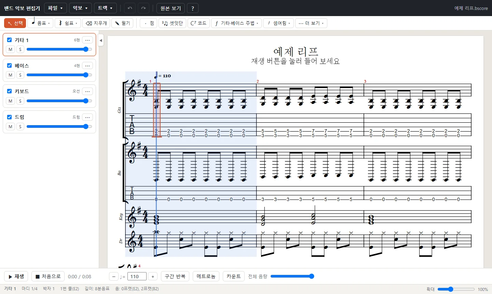
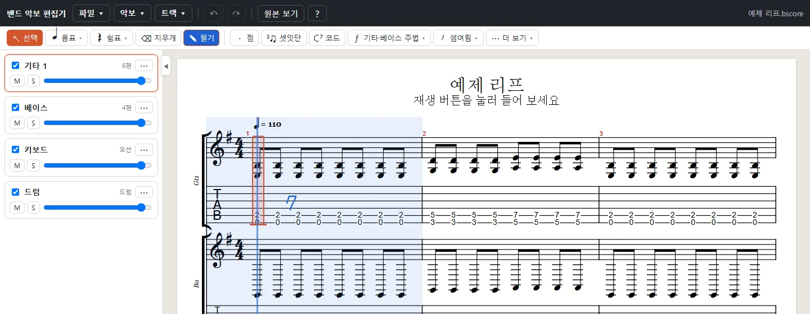
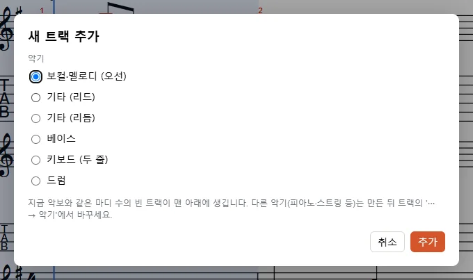

Finale로 만든 PDF
글자와 선이 그대로 들어 있는 PDF(구입한 악보 PDF에 많아요)는 PDF 안의 음표·TAB 숫자·가사·코드·도돌이표를 바로 읽어서 원본과 거의 같게 나와요.
Windows 10·11 · 무료 · 설치 없이 실행
밴드 악보 편집기는 가지고 있는 PDF 악보를 읽어 음표·TAB·가사·코드를 편집 가능한 악보로 바꿔요. 틀린 곳은 Claude 같은 AI에게 원본과 비교해 고쳐 달라고 맡기고, 파트별 악보는 밴드 총보 하나로 합쳐요.

1
BandScoreEditor-…-win64.zip(약 250MB)을 받아요.C:\밴드악보편집기처럼 짧은 곳에 풀면 좋아요.밴드악보편집기 폴더 안의 밴드악보편집기.exe를 두 번 눌러요. 설치는 필요 없어요. 바탕 화면에 바로 가기를 만들어 두면 편해요.추가 정보를 누르고 실행을 누르세요. 개인이 만든 프로그램이라 코드 서명이 없어서 뜨는 경고예요. 한 번 실행하면 다음부터는 뜨지 않아요.
압축을 다 풀기 전에 exe를 누르면 Cannot find Microsoft.Web.WebView2.Core.dll 같은 오류가 날 수 있어요. 압축 풀기가 끝난 폴더에서 실행하면 돼요. _internal 폴더는 exe 옆에 그대로 두세요.
2
메뉴 파일 ▸ 열기에서 PDF나 악보 사진(PNG·JPG)을 고르면 인식해서 악보로 열어요. Guitar Pro(.gp), MusicXML, 이 프로그램 파일(.bscore)은 그대로 열려요.
글자와 선이 그대로 들어 있는 PDF(구입한 악보 PDF에 많아요)는 PDF 안의 음표·TAB 숫자·가사·코드·도돌이표를 바로 읽어서 원본과 거의 같게 나와요.
그림으로 된 PDF는 악보 인식 엔진(Audiveris)으로 읽어요. 기타·베이스 TAB은 원본의 줄·프렛을 그대로 읽지만, 틀린 곳은 고쳐야 해요. 인식 중에 취소할 수 있어요.
3
Claude 데스크톱 앱을 연결하면, 말로 부탁해서 악보를 고칠 수 있어요. Claude가 원본 그림을 보고 마디를 읽고 고치며, 바뀐 내용은 편집기 화면에 바로 보여요.
열린 악보를 원본과 비교해서 61마디부터 고쳐 줘
기타 1 트랙의 박자 안 맞는 마디를 원본대로 고쳐 줘
드럼 9~16마디를 원본 그림과 비교해서 고쳐 줘
원본을 볼 때 악보 그림이 Claude로 전송돼요. Claude Code를 쓴다면 연결 창의 안내대로 명령 한 줄로 연결할 수 있어요.
4
입력 막대에서 음표(또는 쉼표)를 고르고 오선을 누르면 그 자리에 바로 들어가요. 같은 도구를 한 번 더 누르면 길이를 골라요. 음표 위치를 누르면 화음에 더하고, 음표 사이를 누르면 박자를 끼워 넣어요.
TAB에서는 숫자로 프렛(12는 1, 2를 빠르게), 키보드·보컬 오선에서는 A~G로 음을 넣어요. ←→ 박자, ↑↓ 줄 이동.


5
.bscore.bak에 한 벌 남아요.저장한 .bscore를 밴드부 합주 연습 앱에 끌어다 놓으면, 학생들이 코드 하나로 태블릿·폰에서 바로 보고 연습해요.
6
편집기의 ? 단추에서 전체 목록을 볼 수 있어요.
| ← → | 앞·뒤 박자 (끝에서 →를 누르면 박자·마디가 새로 생김) |
|---|---|
| ↑ ↓ | TAB: 줄 이동 / 키보드: 반음 올리고 내리기 |
| 0~24 | TAB 프렛 입력 |
| A~G | 오선에 음 입력 (Shift를 누르면 화음에 더하기) |
| + - . / | 음 길이 짧게·길게 / 점음표 / 셋잇단음표 |
| R · Delete | 쉼표로 바꾸기 · 커서의 음 지우기 |
| F6 F8 F9 | 원본 보기 · 다음 문제 마디 · 박자 자동 맞춤 |
| Space | 재생 / 멈춤 |
| Ctrl+Z / Y | 실행 취소 / 다시 실행 |
| Ctrl+C V | 마디 복사·붙여넣기 (Ctrl+Shift+V는 끼워 붙이기) |
7
압축이 다 풀리기 전에(또는 zip 안에서 바로) exe를 실행한 경우예요. zip을 모두 압축 풀기로 끝까지 푼 다음, 풀린 폴더의 exe를 다시 실행하세요.
추가 정보 ▸ 실행을 누르세요. 코드 서명이 없는 프로그램이라 뜨는 경고예요.
오래된 Windows 10에는 화면을 그리는 Microsoft Edge WebView2 런타임이 없을 수 있어요. 안내대로 설치한 뒤 다시 실행하세요. Windows 11에는 기본으로 들어 있어요.
예전 버전(v1.0.0)에서 생기던 문제예요. 최신 버전을 받아 주세요. 계속 뜨면 zip 파일 오른쪽 클릭 ▸ 속성 ▸ 차단 해제를 체크하고 다시 압축을 푸세요.
스캔·사진 PDF는 곡당 몇 분 걸려요. 해상도가 낮거나 기울어진 사진은 틀린 곳이 많아요. 원본 보기(F6)로 대조하면서 F8로 문제 마디를 찾아 고치거나, Claude에게 원본과 비교해 고쳐 달라고 해 보세요.
밴드악보편집기 폴더를 통째로 옮기세요. exe만 따로 옮기면 실행되지 않아요.